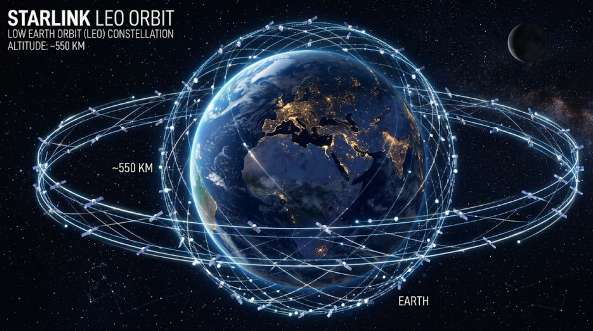

Analisis Teknologi Jaringan Komputer Berbasis Satelit pada Starlink

Di era digital saat ini, internet menjadi kebutuhan utama dalam kehidupan sehari-hari, seperti komunikasi, pendidikan, dan pekerjaan. Meskipun internet telah berkembang pesat di wilayah perkotaan, tetapi tidak semua wilayah dapat menikmati akses internet, seperti pegunungan, pulau terpencil, dan daerah dengan infrastruktur terbatas sering kali sulit dijangkau oleh jaringan konvensional.
Salah satu jaringan konvensional adalah fiber optic. Fiber optic menawarkan kecepatan tinggi dan stabilitas yg baik, tetapi memiliki keterbatasan dalam hal jangkauan. Selain jangkauan, fiber optic juga memerlukan investasi besar dan waktu yang lama, sehingga kurang efisien untuk wilayah terpencil dan penduduk yang sedikit. Selain itu, jaringan seluler juga bergantung pada pembangunan menara pemancar (base station) yang sulit menjangkau wilayah terpencil dan membutuhkan biaya cukup besar juga.
Permasalahan tersebut dapat diselesaikan dengan adanya teknologi jaringan berbasis satelit, salah satunya adalah Starlink. Teknologi ini menawarkan akses internet dengan jangkauan yang luas tanpa memerlukan infrastuktur kabel yang kompleks.
Berdasarkan latar belakang tersebut, artikel yang disusun oleh mahasiswa UPN "Veteran" Yogyakarta ini bertujuan untuk menganalisis teknologi jaringan komputer berbasis satelit pada Starlink, termasuk cara kerja, keunggulan, serta perannya dalam mendukung konektivitas global.
Apasih Jaringan Komputer itu?

Gambar 1: Ilustrasi konektivitas antar perangkat dalam sistem jaringan komputer.
Jaringan komputer adalah sekumpulan perangkat komputer dan perangkat lainnya yang saling terhubung melalui media komunikasi untuk bertukar data dan informasi.
Fungsi utama jaringan:
- Berbagi sumber daya Memungkinkan berbagai perangkat untuk penyimpanan data dan koneksi internet.
- Komunikasi data Memungkinkan pertukaran informasi melalui email, pesan instan, dan video konferensi.
- Akses informasi Memungkinkan akses, pemindahan, dan pengelolaan data secara efektif dan cepat.
- Produktivitas Mempercepat proses ditribusi informasi dan data secara efisien.
Klasifikasi Berdasarkan Jangkauan:
LAN (Local Area Network)
Jaringan skala kecil seperti rumah dan ruangan kantor (Ethernet/Wi-Fi).
MAN (Metropolitan Area Network)
Jaringan skala menengah yang menghubungkan beberapa LAN dalam satu kota.
WAN (Wide Area Network)
Jaringan skala luas mencangkup antar kota dan negara.
Internet
Jaringan skala sangat luas menghubungkan miliaran perangkat seluruh dunia.
Pentingnya Jaringan di Era Modern:
Dalam kehidupan modern sekarang ini jaringan komputer sangat penting. Hampir semua sektor kehidupan bergantung pada jaringan komputer, seperti:
Membutuhkan jaringan untuk telemedicine, mengelola rekam medis, serta mengelola data pasien secara terintegrasi.
Mengelola data rakyat dan menjalankan layanan e-government untuk mempermudah akses layanan publik secara daring.
Menganalisa kekuatan, kelemahan, peluang, dan ancaman (SWOT) secara cepat dan efektif demi daya saing pasar.
Pengenalan Starlink
Apa itu Starlink?
Starlink adalah konstelasi satelit internet pertama dan terbesar di dunia yang menggunakan Low Earth Orbit (LEO) untuk menghadirkan internet pita lebar (broadband) yang mampu mendukung streaming, online gaming, hingga panggilan video.
Dikembangkan oleh SpaceX
Bukan ISP biasa, Starlink merupakan proyek dari SpaceX, milik Elon Musk. SpaceX memanfaatkan roket Falcon 9 untuk meluncurkan ribuan satelit dengan efisiensi biaya yang belum pernah ada sebelumnya.
Orbit Rendah (LEO) 2026
Satelit berada di ketinggian ~550 km. Hal ini memangkas latensi secara drastis, memungkinkan performa yang hampir setara dengan fiber optik darat.

Arsitektur dan Cara Kerja
Secara arsitektur, Starlink terdiri dari empat komponen utama yang bekerja dalam satu ekosistem:
Satelit LEO
Ribuan satelit kecil membentuk konstelasi jaring di orbit bumi.
User Terminal
Antena Phased Array yang melacak satelit tanpa motor penggerak mekanis.
Ground Station
Gateway bumi yang terhubung langsung ke tulang punggung internet global.
Space Lasers
Komunikasi antar satelit via laser yang memungkinkan transmisi data tanpa gateway terdekat.
Visualisasi Orbit Satelit
"Semakin dekat satelit dengan Bumi, semakin cepat data terkirim (Latensi Rendah)."

Orbit Rendah (Starlink)
Terletak pada ketinggian 550 km. Keunggulannya adalah latensi yang sangat kecil (25-50ms), setara dengan koneksi kabel kabel fiber optic. Cocok untuk gaming dan video call.

Orbit Geostasioner
Berada sangat jauh pada 35.786 km. Karena jaraknya yang ekstrem, sinyal membutuhkan waktu lama untuk bolak-balik (Latensi >600ms). Biasanya digunakan untuk siaran TV atau cuaca.
Mengapa ini penting?
Bayangkan Anda melempar bola ke dinding. LEO adalah dinding yang berjarak 1 meter, sedangkan GEO adalah dinding yang berjarak 70 meter. Bola (data) akan kembali jauh lebih cepat pada jarak 1 meter.
Workflow Pengiriman Data
Request: Perangkat (HP/Laptop) mengirim data ke User Terminal (Dish).
Uplink: Dish mengirim sinyal frekuensi tinggi ke Satelit Starlink terdekat.
Relay: Satelit meneruskan sinyal (via laser atau radio) ke Ground Station.
Backbone: Ground Station mengakses data dari server internet global.
Teknologi Jaringan yang Digunakan
Protokol TCP/IP
Dalam sistem jaringan Starlink, komunikasi data tetap menggunakan protokol standar internet yaitu TCP/IP (Transmission Control Protocol / Internet Protocol). Protokol ini berfungsi mengatur pengiriman data dari perangkat pengguna menuju server tujuan melalui terminal Starlink dan satelit. Dengan penggunaan TCP/IP, pengguna Starlink tetap dapat mengakses website, aplikasi, email, dan layanan internet lainnya seperti jaringan biasa.
Routing Data di Jaringan Satelit
Pada Starlink, data dari pengguna dikirim ke antena parabola kecil (dish), lalu diteruskan ke satelit terdekat. Setelah itu, data dapat dikirim ke gateway bumi atau ke satelit lain sebelum menuju server tujuan. Sistem routing Starlink sangat dinamis karena satelit terus bergerak mengelilingi bumi. Oleh sebab itu, Starlink memakai perangkat lunak otomatis untuk memilih rute tercepat dan paling stabil secara real-time.
Frekuensi & Spektrum
Sistem jaringan Starlink menggunakan teknologi antena canggih dan konektivitas berkapasitas tinggi untuk menghubungkan pengguna dengan jaringan satelit. Masing-masing satelit Starlink dilengkapi antena phased array Ku-band serta antena dual-band Ka-band dan E-band yang mendukung transfer data berkecepatan tinggi. Penggunaan spektrum frekuensi ini memungkinkan Starlink melayani banyak pengguna secara bersamaan dengan kecepatan tinggi.
Latensi dan Bandwidth
Salah satu keunggulan utama Starlink adalah latensi rendah dibanding satelit tradisional. Jika satelit geostasioner memiliki latensi sekitar 600 ms atau lebih, Starlink rata-rata berada di kisaran 20–50 ms karena satelit berada jauh lebih dekat ke bumi. Bandwidth Starlink juga cukup besar, dengan kecepatan unduh yang dapat mencapai puluhan hingga ratusan Mbps tergantung lokasi dan kepadatan pengguna. Hal ini membuat Starlink cocok untuk streaming, video call, belajar online, dan gaming.
Inter-satellite link (laser communication)
Starlink generasi baru dilengkapi teknologi Inter-Satellite Link (ISL), yaitu komunikasi antar satelit menggunakan sinar laser. Teknologi ini memungkinkan satelit saling bertukar data langsung di luar angkasa tanpa harus selalu turun ke stasiun bumi. Keuntungan teknologi laser ini adalah mempercepat jalur data jarak jauh, mengurangi ketergantungan pada gateway darat, dan memperluas cakupan layanan di lautan atau wilayah terpencil.
Analisis Perbandingan dengan Jaringan Lain
| Aspek | Starlink (2026) | Fiber Optic | Seluler (5G) |
|---|---|---|---|
| Kecepatan | 50-250 Mbps | 100-1.000+ Mbps | Hingga 1 Gbps |
| Latensi | 20-50 ms | <10 ms | 10-20 ms |
| Stabilitas | Tergantung pada cuaca | Sangat stabil | Tergantung sinyal |
| Cakupan | Global / Pelosok | Terbatas area berkabel | Tergantung menara |
Kelebihan dan Kekurangan Starlink
Kelebihan
- Jangkauan global. Akses internet tersedia hampir di seluruh dunia via satelit LEO.
- Tidak butuh kabel. Efisiensi tinggi tanpa instalasi fisik kompleks di darat.
- Pemerataan di wilayah 3T. Solusi blank spot di daerah terluar dan tertinggal di Indonesia.
Kekurangan
- Biaya tinggi. Masih tergolong mahal dibanding penyedia lokal.
- Dipengaruhi cuaca. Hujan lebat atau awan tebal dapat menghalangi transmisi data.
- Kapasitas terbatas. Kecepatan menurun jika terjadi penumpukan pengguna di satu area.
Dampak terhadap Jaringan Komputer
Perubahan infrastruktur global
Penyediaan koneksi langsung dari satelit ke konsumen tanpa fisik darat.
Internet lebih merata
Menghilangkan batasan jarak dan kesenjangan digital kota-desa.
Mendukung IoT
Dirancang untuk pertumbuhan teknologi masa depan (IoT & AI).
Ancaman Fiber
Potensi membuat infrastruktur kabel wilayah tertentu kurang relevan.
Implementasi di Indonesia
Karakteristik Indonesia sebagai negara kepulauan seringkali menyebabkan kesenjangan akses. Starlink menjadi solusi strategis:
Pendidikan
Akses sumber daya pendidikan daring untuk sekolah di Papua, NTT, dan Maluku.
Pemerintahan
Memperkuat komunikasi militer dan operasi intelijen di daerah terpencil.
Mendukung transaksi perbankan, e-commerce, dan operasional bisnis global.
Memungkinkan pembelajaran jarak jauh (E-Learning) dan akses literasi digital luas.
Analisis Kesenjangan Digital
Visualisasi Konektivitas Global
Kondisi Saat Ini
Wilayah pelosok Indonesia (hitam) kini terhubung langsung ke konstelasi satelit tanpa hambatan geografis.
Kunci Konektivitas
Infrastruktur Kabel
Kota Besar
Wilayah Pelosok
Blank Spot
Solusi Starlink
Koneksi 100% Tanpa Batas
"Digital divide bukan lagi hambatan bagi kemajuan bangsa."
Dampak Jaringan Starlink
Dampak Positif
- Akses internet merata di daerah 3T.
- Mendukung digitalisasi ekonomi pedesaan.
- Komunikasi darurat saat bencana alam.
Dampak Negatif
- Potensi polusi cahaya bagi astronom.
- Ketergantungan pada penyedia tunggal.
- Risiko sampah antariksa (kessler syndrome).
Implementasi di Indonesia
Starlink telah resmi masuk ke Indonesia untuk mendukung transformasi digital, terutama di wilayah yang sulit dijangkau kabel fiber optik seperti:
Kaitan Dunia Kampus
Riset Teknologi
Menjadi objek penelitian bagi mahasiswa Informatika mengenai protokol jaringan satelit dan latensi.
Konektivitas
Memudahkan mahasiswa KKN atau riset di lapangan untuk tetap terhubung ke portal kampus.
Masa Depan Starlink
"Target Starlink di masa depan adalah menyediakan layanan Direct-to-Cell (internet langsung ke HP tanpa antena khusus) serta mendukung misi Mars untuk memastikan manusia tetap terhubung antarplanet."
Daftar Pustaka
Rambe, R., Hermawan, F. F., & Saedudin, R. R. (2025). Dampak Masuknya Starlink ke Indonesia terhadap Keamanan Jaringan Nasional dengan Metode SLR (Systematics Literature Review). Information System and Emerging Technology Journal, 6(2), 43–53.
Kementerian Pertahanan RI. (2026). Penjualan Starlink di Indonesia: Peluang dan Tantangan bagi Pertahanan Nasional. Jakarta: Direktorat Veteran.
Ridwan, M., dkk. (2026). Oligopoli Telekomunikasi dan Inovasi: Analisis Dampak Masuknya STARLINK bagi Industri Telekomunikasi di Indonesia. Jurnal Ilmiah Ekonomi Dan Manajemen, 2(12).
Mauliyanto, E., & Sendjaja, S. (2026). Pengaruh Starlink terhadap Strategi Business Continuity Plan pada Perusahaan Internet Service Provider di Indonesia. Jurnal Informatika dan Bisnis, 14(1).
SpaceX. (2026). Starlink Official Technology Specifications. Diakses dari starlink.com.
IEEE Spectrum. (2026). How Starlink’s Phased Array Antennas and Laser Inter-Satellite Links Work.
Space News. (2026). The Evolution of LEO Broadband: SpaceX and the Global Internet Divide.
Rambe, R., Hermawan, F. F., & Saedudin, R. R. (2025). Dampak Masuknya Starlink ke Indonesia terhadap Keamanan Jaringan Nasional dengan Metode SLR (Systematics Literature Review). Information System and Emerging Technology Journal, 6(2), 43–53.
Kementerian Pertahanan RI. (2024). Penjualan Starlink di Indonesia: Peluang dan Tantangan bagi Pertahanan Nasional. Jakarta: Direktorat Veteran.
Ridwan, M., dkk. (2024). Oligopoli Telekomunikasi dan Inovasi: Analisis Dampak Masuknya STARLINK bagi Industri Telekomunikasi di Indonesia. Jurnal Ilmiah Ekonomi Dan Manajemen, 2(12).
Mauliyanto, E., & Sendjaja, S. (2024). Pengaruh Starlink terhadap Strategi Business Continuity Plan pada Perusahaan Internet Service Provider di Indonesia. Jurnal Informatika dan Bisnis, 14(1).
SpaceX. (2024-2026). Starlink Official Technology Specifications. Diakses dari starlink.com.
Federal Communications Commission (FCC). (2023-2025). Filings for Starlink Gen2 Satellite Constellation and Orbital Parameters.
McDowell, J. (2025). Jonathan’s Space Report: Starlink Satellite Constellation Tracking. Harvard-Smithsonian Center for Astrophysics.
IEEE Spectrum. (2024). How Starlink’s Phased Array Antennas and Laser Inter-Satellite Links Work.
Space News. (2025). The Evolution of LEO Broadband: SpaceX and the Global Internet Divide.
Monotaro Indonesia. (2025). STARLINK: Cara Kerja, Keunggulan, dan Biaya Pasangnya. Diakses dari Monotaro Indonesia.
Frąckiewicz, M. (2025). Fiber vs 5G vs Starlink: The Shocking Truth About Internet Speeds, Latency and Costs Worldwide. TS2 Tech.
Universitas Pembangunan Nasional “Veteran” Yogyakarta. (2026). Website Resmi UPN Veteran Yogyakarta. Diakses dari https://www.upnyk.ac.id/.
International Telecommunication Union (ITU). (2024). Future Network Technologies and Satellite Communication. Diakses dari https://www.itu.int/.
Kementerian Komunikasi dan Informatika Republik Indonesia. (2024). Pemerataan Akses Internet di Daerah 3T. Diakses dari https://www.kominfo.go.id/.
Kurose, J. F., & Ross, K. W. (2021). Computer Networking: A Top-Down Approach (8th ed.). Pearson.
Cisco Networking Academy. (2023). Introduction to Networks. Cisco Press.